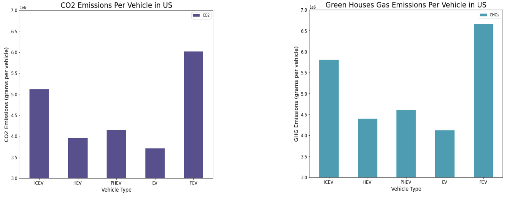
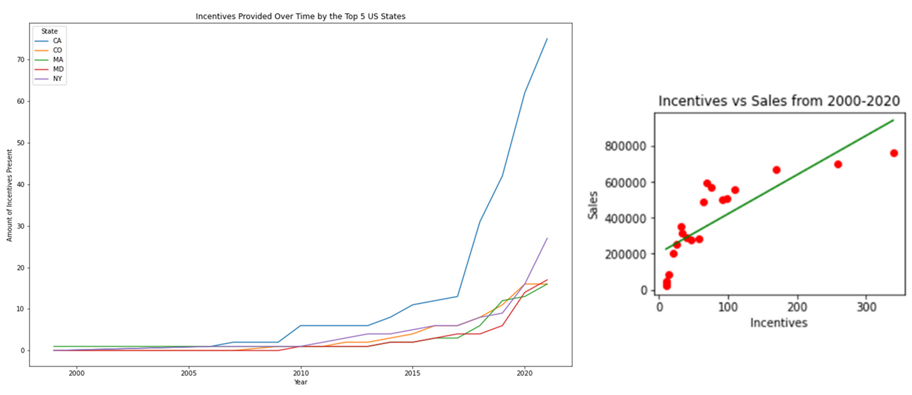

By: Veronica Parra and Brinda Suri
In
2019, according to the Environmental Protection Agency, the
transportation sector produced 29% of total greenhouse gas emissions in
the USA. This is the largest contributor to pollution. As pollution
steadily increases, more environmentally conscious actions must be taken
to mitigate its effects. Electric vehicles (EVs) provide a great
solution in doing so and can reduce emissions within the transportation
sector. This is our main motivation in exploring how and where EVs can
make an impact.
We break up this exploration into three separate sections:
Most
of our data came from U.S. government-owned websites and included
mainly structured data. Our goal was to observe greenhouse gas emissions
by their type and its distribution across an electric vehicle's
lifetime, to explore how available are EV incentive policies throughout
the US and how they correlate with the amount of sales across the US,
and to analyze how people in each state are moving towards purchasing
and registering one of these cars and how widespread electric stations
are.
The following are our data sets:
Before diving into our data, we needed to preprocess our data. This consisted of cleaning up any null values and removing or adjusting any data points that did not have dates to have a better time series analysis. Based on our goal, we also removed any unwanted features to have a more straightforward data set to work with such as removing raw mineral consumption from our GREET dataset and keeping it by emissions for an EV. The following is how we proceeded for each section:
We've observed that electric vehicle adoption, from plug-in to hybrid to all-electric, can help in reducing greenhouse gas emissions. They still have the least amount from manufacturing to on the road use. This can be seen from visualizations we have generated from our given data sets as shown below. We've included a look into the carbon dioxide emissions since it covers the largest percentage of greenhouse gases and is the most harmful in ruining our atmosphere. However, we also account for the other gases to better understand how electric cars fares in contributing to their emissions and it can be seen that they still contribute much less to its internal combustion and fuel cell counterparts.
The amount of incentives provided across the US has been increasing alongside electric vehicles, possibly to match the push for EVs, which is seen especially in California. Based on our time series shown below on the left, we can see that in the last 5 years California has become a great example for any other populous state or city to incentivize its citizens and companies to adopt electric vehicles.
Also, initial observation (shown above on the right) suggests that incentives can aid in electric car adoption but these policies might not take into effect immediately such as grants. Further analysis indicates that additional variables would benefit the linear regression analysis such as a demand factor since information like inventory size can help to better analyze how policies correlate in selling those available cars. For California specifically, we saw that loans correlated the most with the rise of electric vehicle registrations in the state.
Lastly, we found that consumers are buying more electric vehicles across the U.S., especially in California, Washington and Hawaii. We've identified some states where producers can invest more into electric vehicles to fully utilize already available electric stations such as in Arizona and Montana. We've also noted that an EV can have an efficient range of over 230 miles that can be great for highway use and still be relatively affordable, such as the Kia and Tesla models. Below are a couple of our models: the left is an in-depth look of EV producers and models, and on the right is a heatmap of percentage of EV populations.